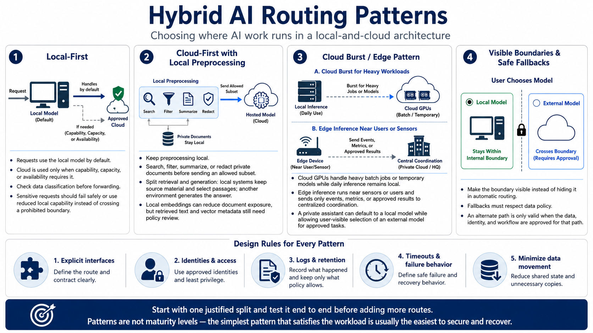

Architecture Patterns
Connecting to LMS... Progress: in progress

Narration
In a local-first pattern, requests go to a local model unless capability, capacity, or availability requires an approved cloud alternative. This preserves local control for routine work. The fallback must check data classification before forwarding. A sensitive request should fail safely or use a reduced local capability rather than cross a prohibited boundary.
A cloud-first pattern can keep preprocessing local. Private documents may be searched, filtered, summarized, or redacted before an allowed subset is sent to a hosted model. Split retrieval and generation follows this idea: local systems retain source material and select passages, while another environment generates the answer. Local embeddings can prevent raw documents from leaving, but retrieved text and vector metadata still require policy review.
Cloud GPUs can handle heavy batch jobs or temporary models while daily inference remains local. Edge inference places a model near sensors or users and sends only events, metrics, or approved results to centralized coordination. A private assistant may expose a local default model and allow users to choose an external model for approved tasks, making the boundary visible instead of hiding it in automatic routing.
Each pattern needs explicit interfaces, identities, logs, retention, timeouts, and failure behavior. Minimize data movement and shared state. Begin with one justified split and test it end to end before adding routes. Patterns are not maturity levels; the simplest one that satisfies the workload is usually the easiest to secure and recover.